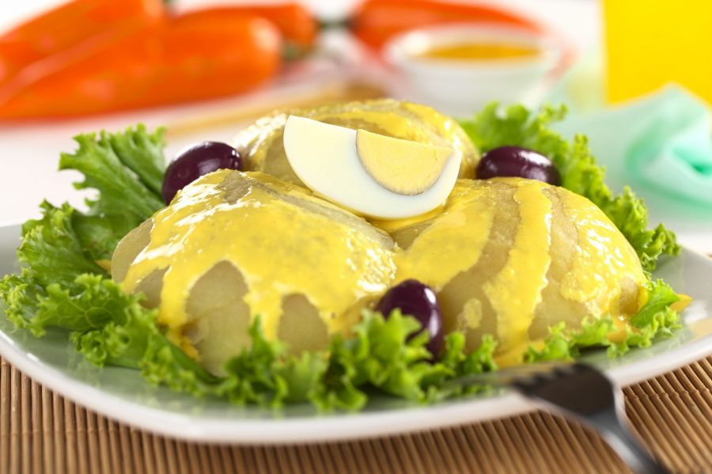
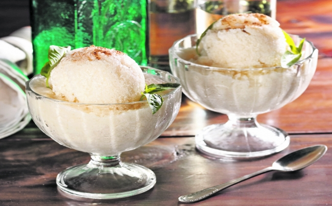

Cocinando
El Blog de los amantes de la Gastronomia
Papa a la Huancaina
04 de Enero del 2019 La papa a la huancaína es un plato típico de la costa y sierra central del Perú que, junto al ceviche, es uno de los productos gastronómicos más populares y representativos de este país. Es una comida muy rica que se suele preparar como acompañamiento del arroz con pollo o como una entrada a la hora del almuerzo.

Juan25: Que genial la publicacion de la comida peruana I Like it!!!
Astronauta: El lomo saltado es uno de mis preferidos, gracias a la publicacion de la receta aprendi a prepararlo te doy like

Sharapova-cool: Cuando visite el Perú quede encantada con la comida de la costa, sierra y selva
Queso helado
15 de Febrero del 2019 El queso helado, o helado de tarro, es un dulce lácteo helado que, a pesar de denominarse de tal manera, no lleva queso entre sus ingredientes principales.Su textura es cremosa y generalmente se prepara de forma artesanal, combinándolo con diversos sabores, aunque ya existen empresas dedicadas a la elaboración de este postre en forma industrializada.
Goku23: Este postre es tipico de la ciudad de Arequipa muy delicioso!!!